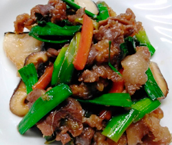

クジラと葉ニンニクのすき焼き風
- 調理時間：30 分
- （一人当たり）
- カロリー：201kcal
- たんぱく質：21.8g
- 脂質：3.0g
- 炭水化物：21.7g
- 塩分：1.8g


＜2人分＞
- クジラ肉
- 150g
- 葉ニンニク
（行者ニンニク） - 100g
- ニンジン
- 80g
- 椎茸
- 3枚
- 生姜（すりおろし）
- 少々
- 植物油
- 少々
- 砂糖
- 大さじ1.5
- しょうゆ
- 大さじ1.5
- 料理酒
- 大さじ1


- 葉ニンニクは5㎝長さに切る。
ニンジンは短冊切りにする。
椎茸は薄切りにする。 - クジラは一口大に切り、すりおろし生姜で下味をつける。
- 醬油と料理酒を合わせておく。
- フライパンに植物油を熱し、クジラ肉を加えて軽く炒めたら砂糖を振りかけて炒める。
③の半量を回しかける。 - クジラ肉を鍋の端に寄せ、ニンジン、椎茸、葉ニンニクを入れて、③の残りを加えて蓋をして1～２分煮る。
全体を混ぜ合わせ、味が行き渡れば出来上がり。
クジラと葉ニンニクのすき焼き風
日本における捕鯨文化は縄文時代からともいわれています。飛鳥時代には仏教の思想が広がり、肉食が禁止となりますが、クジラは魚とみなされ食されていたことが分かっています。現在は、アメリカを中心とした国々が捕鯨を反対しています。そのため、日本のクジラの供給量は大幅に減少しました。それでも全国に数か所、クジラの鯨体処理場がありクジラを食べる食文化は受け継がれています。